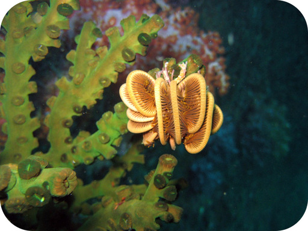
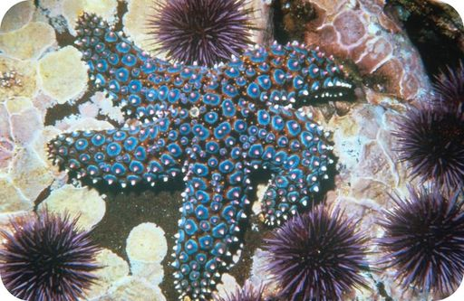
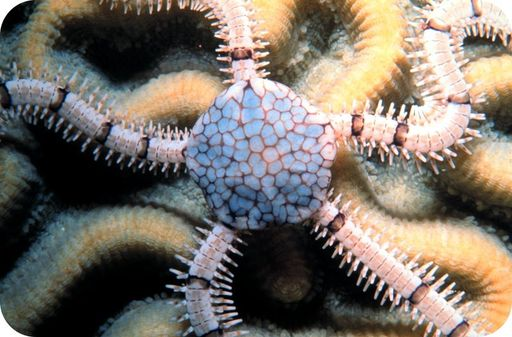
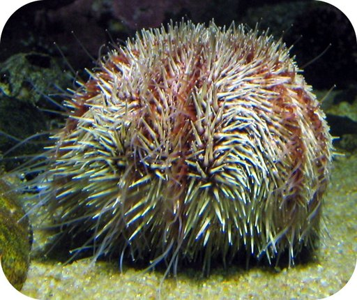
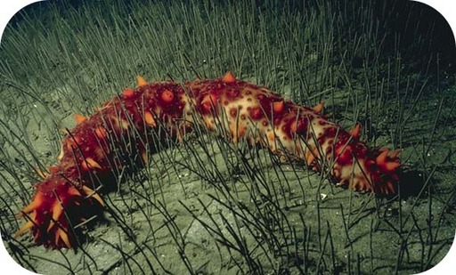

| Class (includes) | Description | Example |
|---|---|---|
|
Crinoidea
|
fewer than 100 species; many have more than five arms; earliest and most primitive echinoderms; live on the ocean floor, mainly in deep water; filter feeders |
feather star  |
|
Asteroidea
|
almost 2000 species; most have five arms; many are brightly colored; live on the ocean floor, mainly in shallow water; predators or scavengers |
sea star  |
|
Ophiuroidea
|
about 2000 species; central disk distinct from arms; move by flapping their arms, which lack suckers; live on the ocean floor in shallow or deep water; predators, scavengers, deposit feeders, or filter feeders |
brittle star  |
|
Echinoidea
|
about 100 species; do not have arms but do have tube feet; have a specialized mouth part with teeth to scrape food from rocks; live on the ocean floor in shallow or deep water; predators, herbivores, or filter feeders |
sea urchin  |
|
Holothuroidea
|
about 1000 species; long body without arms; unlike other echinoderms, have a respiratory system; live on the ocean floor in shallow or deep water; deposit feeders, or filter feeders |
sea cucumber  |